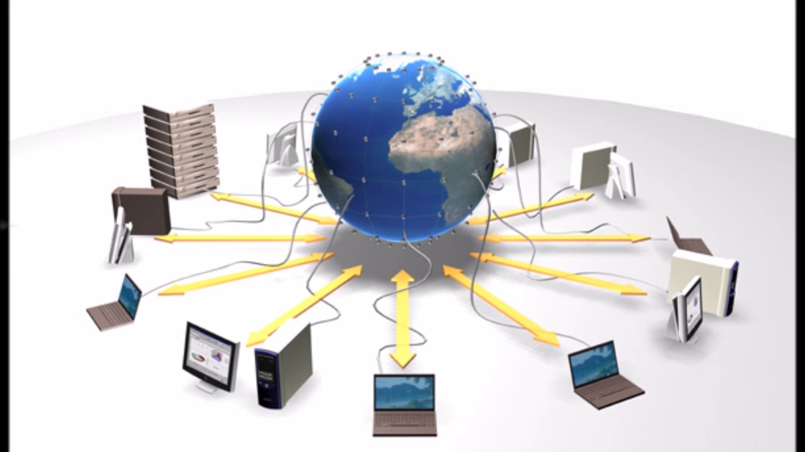

¿Qué es una Red de Computadoras?
Una red de computadoras es un conjunto de computadoras y dispositivos interconectados que pueden comunicarse entre sí para compartir recursos y datos. Las redes pueden variar en tamaño y complejidad, desde pequeñas redes locales en una oficina hasta redes globales como Internet.
Tipos de Redes de Computadoras
Redes de Área Local (LAN)
Las LAN conectan computadoras en una área geográfica limitada, como una oficina o una escuela. Permiten compartir recursos como impresoras y archivos.

Redes de Área Metropolitana (MAN)
Las MAN abarcan un área geográfica más grande que una LAN, como una ciudad. Se utilizan para conectar varias LANs en una región metropolitana.
Redes de Área Amplia (WAN)
Las WAN cubren áreas geográficas extensas, como países o continentes. Internet es el ejemplo más grande de una WAN.
Componentes de una Red
- Dispositivos: Computadoras, servidores, impresoras, etc.
- Medios de Transmisión: Cables, ondas de radio, fibra óptica.
- Protocolos: Reglas que permiten la comunicación entre dispositivos, como TCP/IP.
- Equipos de Red: Routers, switches, hubs.
Referencias Bibliográficas
- Tanenbaum, A. S., & Wetherall, D. J. (2011). Redes de Computadoras (5ª ed.). Pearson. Enlace
- Kurose, J. F., & Ross, K. W. (2016). Computer Networking: A Top-Down Approach (7ª ed.). Pearson. Enlace
- Forouzan, B. A. (2012). Data Communications and Networking (5ª ed.). McGraw-Hill Education. Enlace
- Stallings, W. (2013). Data and Computer Communications (10ª ed.). Pearson. Enlace
- Halsall, F. (2005). Computer Networking and the Internet (5ª ed.). Pearson. Enlace